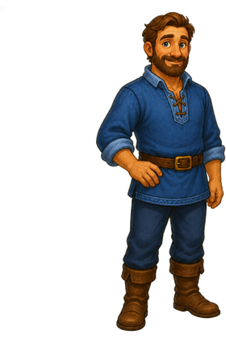
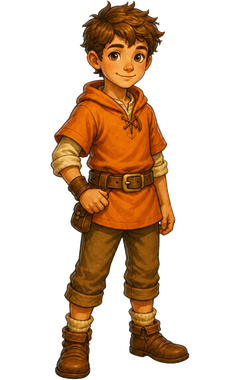
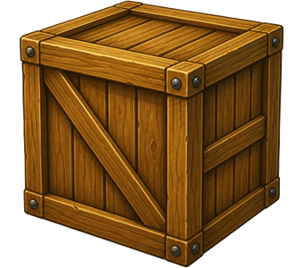
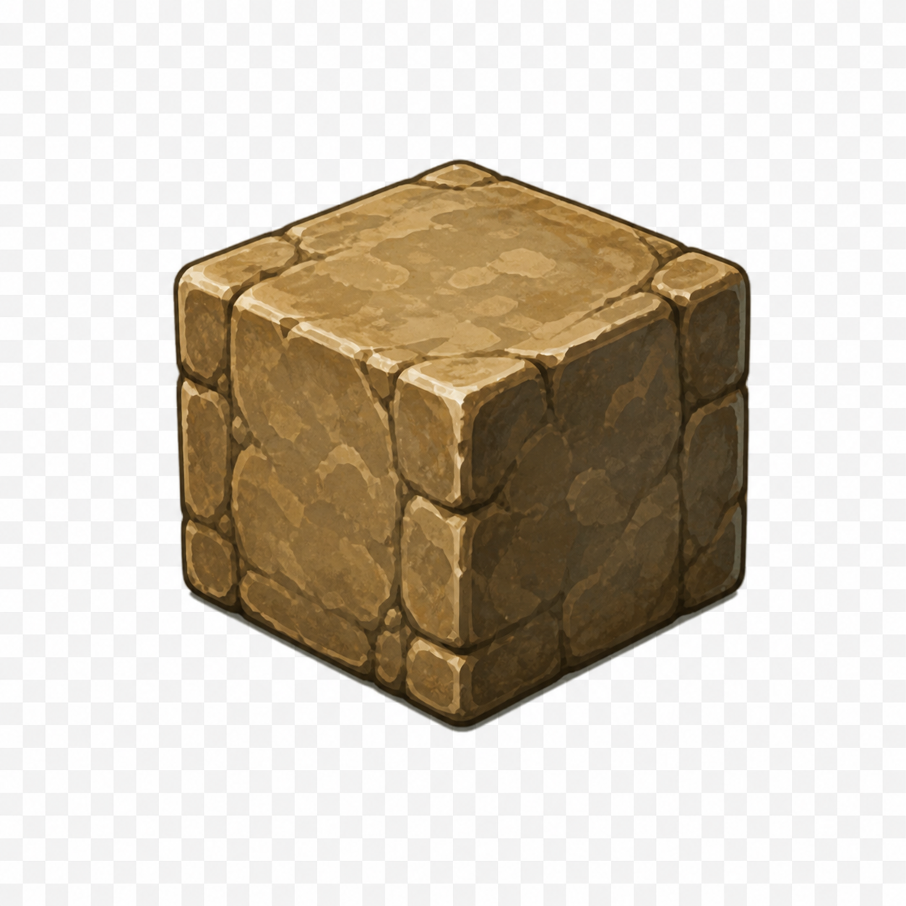
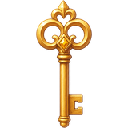

Vater & Sohn – Das Gartentor
Tippe auf Dinge im Bild. Findet gemeinsam den Weg durch das Tor.





Wir müssen den Hof öffnen. Lass uns gemeinsam das Rätsel lösen!
Inventar
leer
leer
leer
leer
□ Schlüsselteil finden
□ Kiste auf linke Platte
□ Stein auf rechte Platte
□ Hebel betätigen
□ Tor öffnen